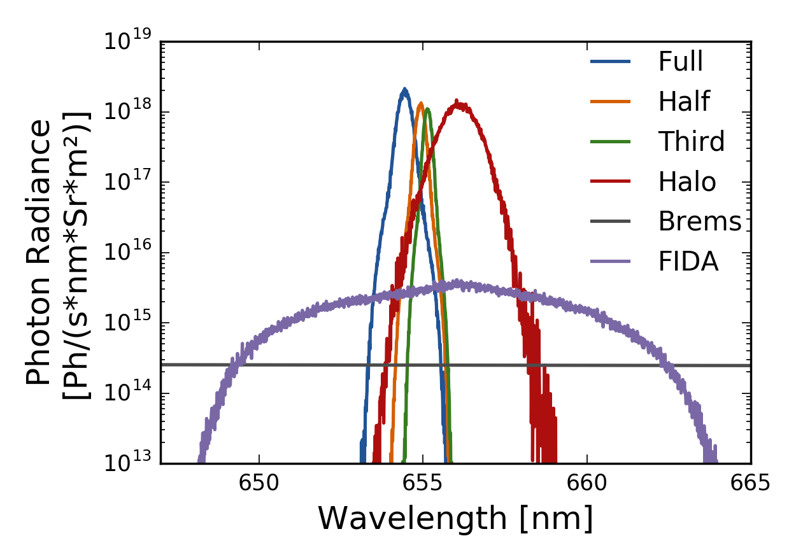
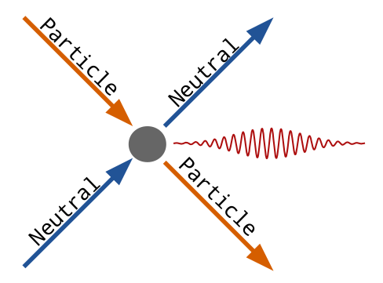
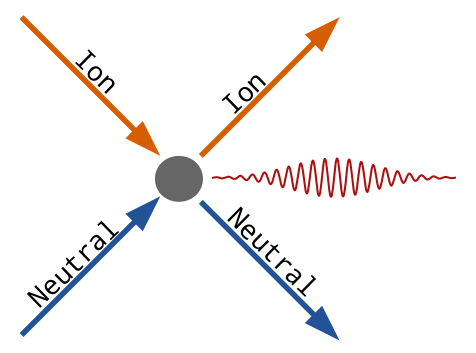
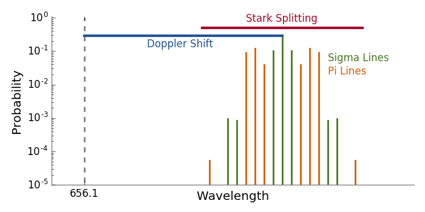
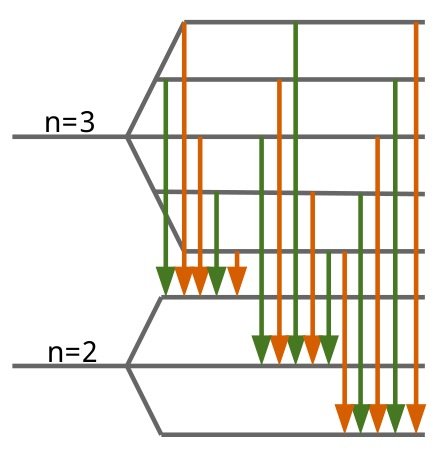

The spectroscopic geometry is defined similarily to the neutral beam.
It is defined by the lens position in machine coordinates and an optical axis.
The volume of the sightline is assumed to be cylindrical with radius, spot_size.
If mirrors are present then the apparent positions of the lens as seen from the plasma are used.
Additionally, mirrors reflect the sigma and pi Stark lines differently due to a difference in polarization.
The experimentally determined ratio of the intensties of the sigma and pi lines, sigma_pi, is used to correct for this.
If there are no mirrors then sigma_pi is set to 1.0 .
The full geometry specification is given below.
| Variable | Type | Rank | Dimensions | Units | Description |
|---|---|---|---|---|---|
nchan |
Int32 | 0 | NA | NA | Number of channels |
system |
String | 0 | NA | NA | Name of the spectrocopic system(s) |
data_source |
String | 0 | NA | NA | Source of the spectral geometry data |
id |
String | 1 | [nchan] |
NA | Channel ID |
radius |
Float64 | 1 | [nchan] |
cm | Line of sight radius at midplane or tangency point |
lens |
Float64 | 2 | [3,nchan] |
cm | Lens location in machine coordinates |
axis |
Float64 | 2 | [3,nchan] |
NA | Optical axis/direction of the lines of sight |
spot_size |
Float64 | 1 | [nchan] |
cm | Radius of the collecting volume |
sigma_pi |
Float64 | 1 | [nchan] |
NA | Ratio of the intensities of the sigma and pi stark lines |
FIDASIM can calculate the following spectra

The largest source of background emission is visible bremsstrahlung. The local bremsstrahlung emissivity per unit wavelength is given by
$$\frac{dN_B}{d\lambda} = 7.57 \times 10^{-9} \, g \, \frac{n_e^2 \, Z_{eff}}{\lambda \, T_e^{1/2}} e^{-hc/\lambda \,T_e} $$
where \(\lambda\) is the wavelength in angstroms, \(n_e\) is the electron density in \(cm^{-3}\), \(T_e\) is the electron temperature in eV. The gaunt factor, \(g\), depends on \(T_e\) and \(Z_{eff}\). It can be approximated by
$$ g = 5.542 - (3.108 - \ln(T_e/1000))(0.6905 - 0.1323/Z_{eff}) $$
To calculate the total emission "seen" by the line of sight the the local emissivity is integrated over the line of sight.
There are two processes in which neutrals can emit light: Excitation and Charge Exchange.
 
Excitation is the primary method in which beam neutrals emit light (BES). In short, a neutral particle collides with a charged particle, exciting into a higher energy (\(n=3\)) state. When the neutral particle relaxes (\(n: 3 \rightarrow 2\)) it emits a doppler shifted (656.1 nm) photon.
Charge Exchange is the process by which the Halo and FIDA light is created. In a charge exchange reaction a thermal (Halo) or fast (FIDA) ion steals a electron from a neutral particle. The newly created neutral is born in an excited (\(n=3\) state and like the collisionally excited neutral it relaxes to a lower energy state (\n=2) and emits a doppler shifted (656.1 nm) photon.

 The motion of a ion in a magnetic field induces an electric field which causes Stark Spitting of the the atoms energy levels. Most atoms the strength of the Stark effect is quadratic in low electric fields and linear for strong electric fields. Usually atoms never the linear regime but, due to degenerency between states of different angular momentum, hydrogenic atoms exhibit a linear Stark effect. The linear Stark energy component shifts are given by the following equations.
$$\Delta \mathcal{E} = 3nk\frac{E}{Ze/4\pi\epsilon_0a_0^2}R_y\;\, \mathrm{for} \;\,k=0,\pm 1,\dots,\pm (n-1)$$
As seen from the above equation, each energy level is split into \(2n-1\) parts. For the Balmer-alpha transition, this creates 15 distinct transitions from the \(n=3 \rightarrow 2\) state.
The relative intensity of the different Stark lines is given by
$$ I_{rel}(i) = S_I(i)\,(1 \pm (\vec{v}_{ph} \cdot \vec{E})^2) $$ $$ I_{rel}(i) = \frac{I_{rel}(i)}{\sum_i I_{rel}(i)} $$
where positive and negative sums refer to \(\sigma\) and \(\pi\) lines respectively and \(S_I\) are the calculated relative Stark intensities for each transition given by
$$S_I = [1, 18, 16, 1681, 2304, 729, 1936, 5490, 1936, 729, 2304, 1681, 16, 18, 1] $$
calc_fida: Calculate FIDA spectracalc_brems: Calculate Bremsstrahlungcalc_bes: Calculate Beam Emission and Halodump_dcx: Dump DCX spectran_fida: Number of Monte Carlo particles used in FIDA spectra calculationn_nbi: Number of Monte Carlo particles used in BES spectra calculationn_dcx and n_halo: Number of particles used in Halo spectra calculationnlambda: Number of wavelength binslambdamin: Minimum wavelength [nm]lambdamax: Maximum wavelength [nm]